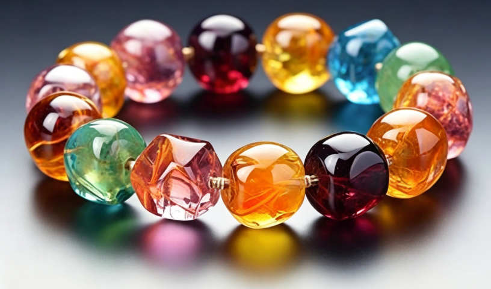

金木水火土 × 水晶能量
一份完整的五行水晶能量调理指南
在快节奏的现代生活中，我们常常感觉被无形的压力束缚，心灵渴望解脱。这股"无形的力量"，在古老的智慧中被视为"气"或"能量场"。而水晶，作为大地孕育的精华，被认为是连接无形世界与有形肉体的桥梁。
今天，我们就来探讨如何利用水晶的五行属性，来平衡我们自身的能量，达到加持运势、调和身心的目的。🔮
我们身处的世界，万物皆有其振动频率。人体本身就是一个复杂的能量场，根据现代科学和古老哲学的结合，这种磁场被分为现实维度的物理电磁场和不可测量的"人性磁场"（或称辉光、以太体）。
这种无形的能量场会随着我们的情绪、健康状态甚至思想而变化。当负面情绪过多时，会降低我们的振动频率，使人更容易感到疲惫和痛苦。
💎 水晶，因其独特的晶格结构和亿万年的地质淬炼，本身带有稳定且高频的能量。佩戴或摆放水晶，就如同为我们自身的能量场注入一股清流，通过"共振"原理，将低频能量调节提升为高频能量。
中国传统五行学说（金、木、水、火、土）是解释宇宙万物相生相克的系统。水晶的能量特性可以通过其颜色和形态对应到五行之中，从而帮助我们进行针对性的能量调理。
了解了无形的能量与有形的五行对应后，我们可以通过以下方式进行能量加持：
在传统命理中，每个人的生辰八字决定了五行的强弱。如果某项元素缺失或较弱，可以选择对应属性的水晶进行能量补充：
💧 八字缺"水"（常感精力不足/易紧张）→ 佩戴黑曜石、海蓝宝
🔥 八字缺"火"（缺乏热情/行动力不足）→ 佩戴石榴石、红发晶
🏔️ 八字缺"土"（缺乏安全感/财运不稳）→ 佩戴黄水晶、虎眼石
如果某一行能量过于亢奋，则需要用"相克"的元素来调和，以达到平衡：
😤 火过旺（易怒、急躁）→ 佩戴黄色（土）或黑色（水）水晶来平衡火气
😔 水过旺（犹豫、悲观）→ 佩戴绿色（木）或红色（火）水晶来提升活力
如果你不确定自己的五行属性，或希望进行全面的能量净化与加持，可以选择白水晶和金发晶（钛晶）。它们被认为超越了简单的五行划分，直接作用于阴阳层次，是能量最纯粹、最全面的选择，适合任何人在任何时候佩戴。
水晶的能量并非迷信，而是一种通过自然物质与人体微观能量场发生的微妙共振。
选择一块与自己五行相应、令你心生欢喜的水晶，
都是一次与自然的深度对话。
让我们在喧嚣中借助这份"无形的力量"，找到属于自己的平衡与光芒。💎✨